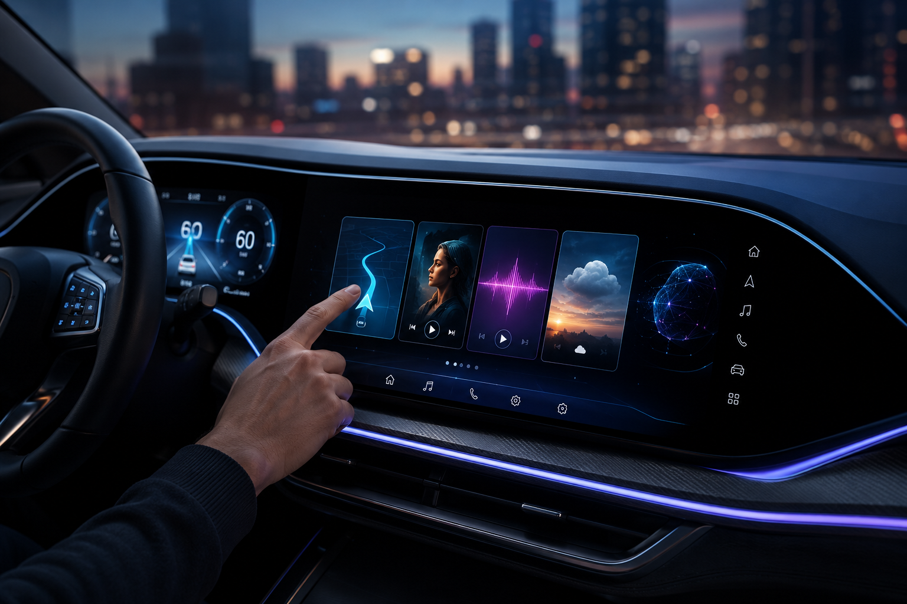
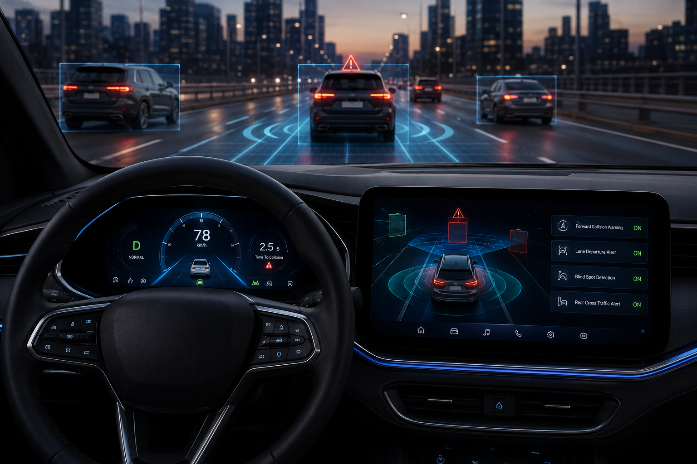
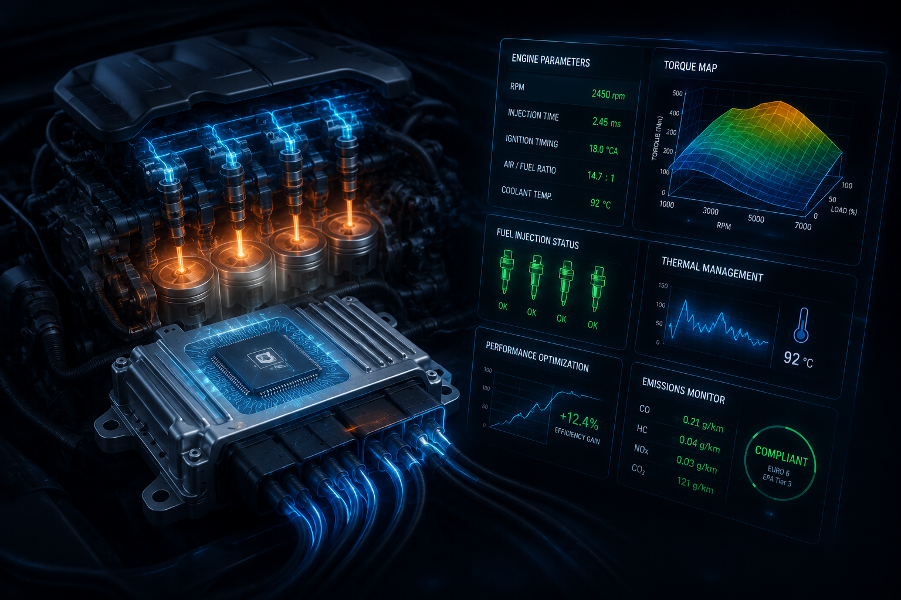
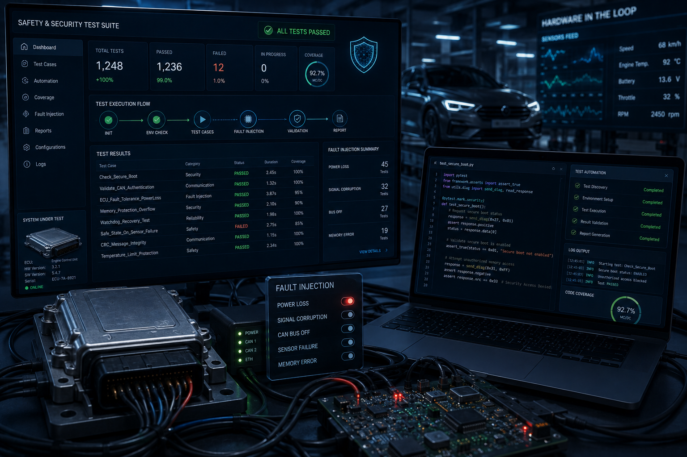
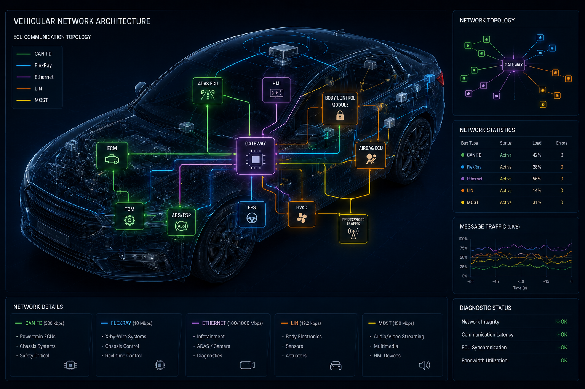

Portafolio

Sistema de Infotainment de Nueva Generación
Desarrollo de interfaces de usuario (HMI) de alta fidelidad, optimizando la fluidez de navegación y la integración de servicios multimedia en tiempo real.

Algoritmos de Asistencia Activa (ADAS)
Implementación de lógica de software para sensores de proximidad y sistemas de alerta temprana enfocados en la seguridad funcional del vehículo.

Control de Unidad de Motor (ECU)
Micro-optimización de código para la gestión de inyección y rendimiento térmico, cumpliendo estándares internacionales de eficiencia.
Telemetría de Flota y Conectividad
Arquitectura de software para la captura y transmisión de datos críticos del vehículo hacia la nube para monitoreo preventivo y mantenimiento inteligente.

Suite de Pruebas de Seguridad Crítica
Desarrollo de scripts automatizados para la validación de protocolos de seguridad y resistencia del software ante fallos del hardware.

Arquitectura de Redes Vehiculares
Diseño y configuración de redes internas para la comunicación eficiente entre los diferentes módulos electrónicos del vehículo y sus ECUs.